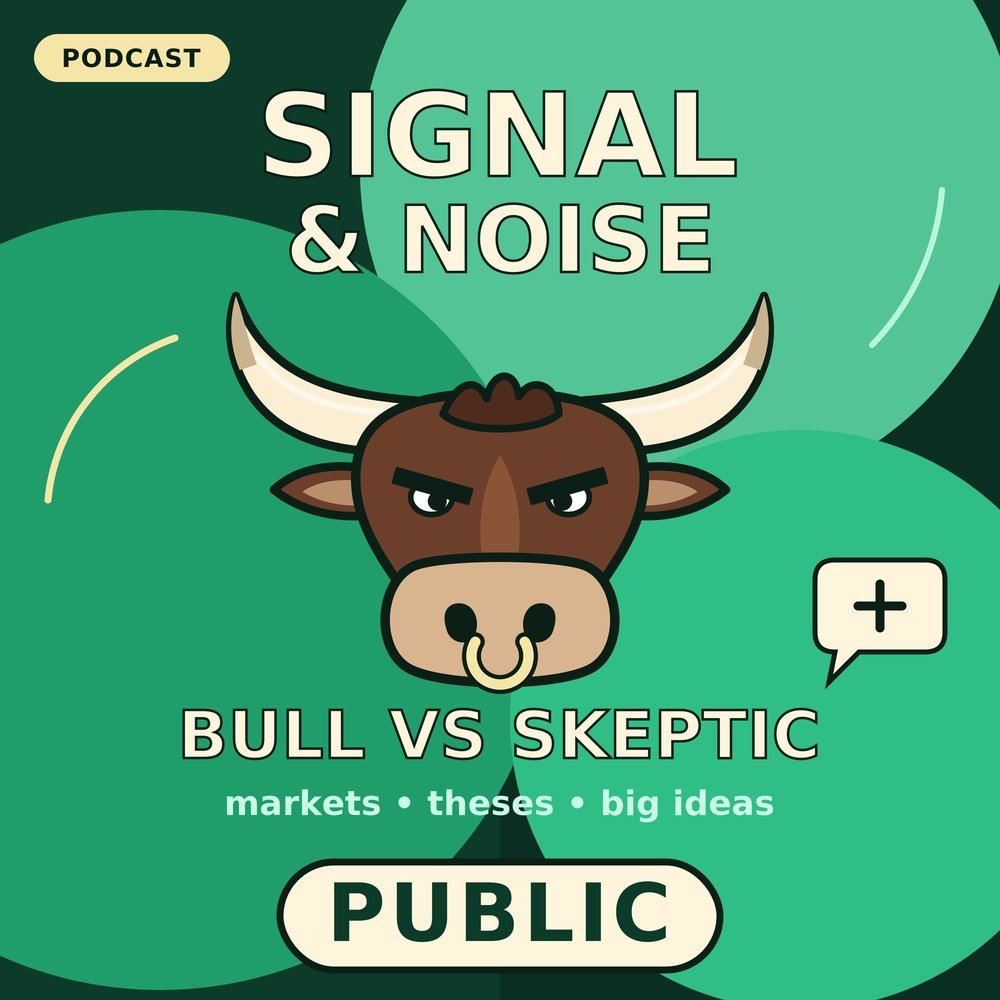

A Two-Trillion Open, a Seventeen Percent Close
Anthropic (Nasdaq: ANT) priced at $83, opened at $111.50 (+34%), hit $115.10 and closed its first day at $97.17, up 17.1% from the IPO price, on more than 846 million shares. Max (bull) and Lena (skeptic) go through the final prospectus (980 million shares, $81.34B raised, the biggest IPO on record, plus a $26B private placement from Google, Nvidia, AMD, Broadcom, Micron, Microsoft and TSMC), the full first trading day, $33.2B in nine-month revenue, the Q3 swing back to an operating loss, ~$900B in compute commitments, the five-class governance structure, the protests, and what to watch next.